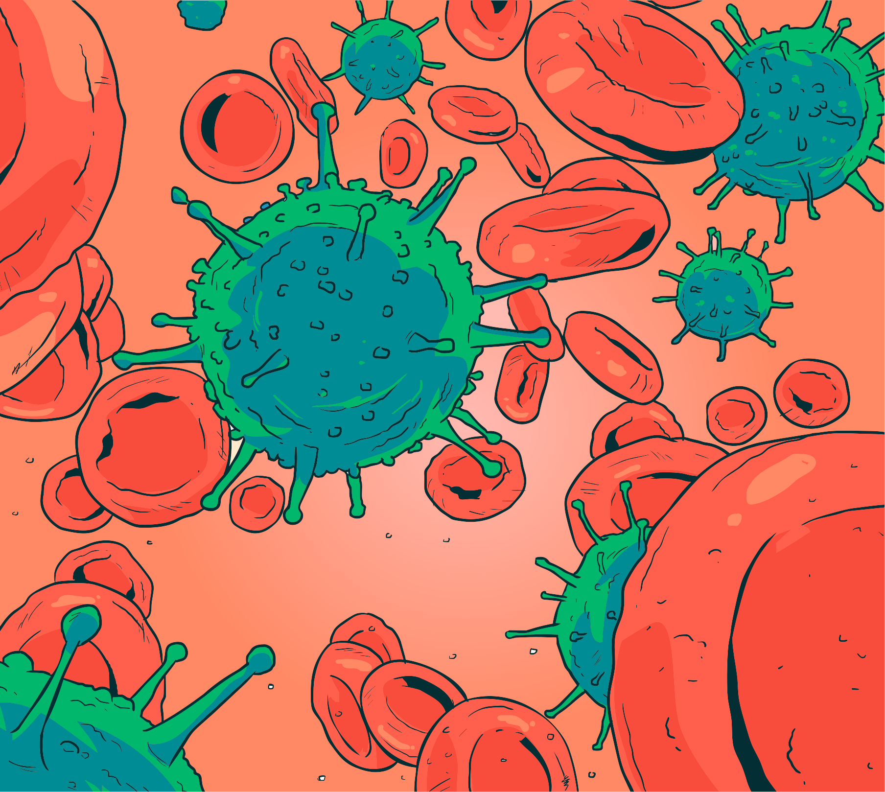

Por sua vez, AIDS é a sigla de acquired immunodeficiency syndrome ou, em português, síndrome da imunodeficiência adquirida. É uma doença do sistema imunológico humano resultante da infecção pelo vírus HIV. O organismo da pessoa com AIDS fica mais vulnerável a infecções oportunistas, que inclui um simples resfriado ou uma pneumonia grave.